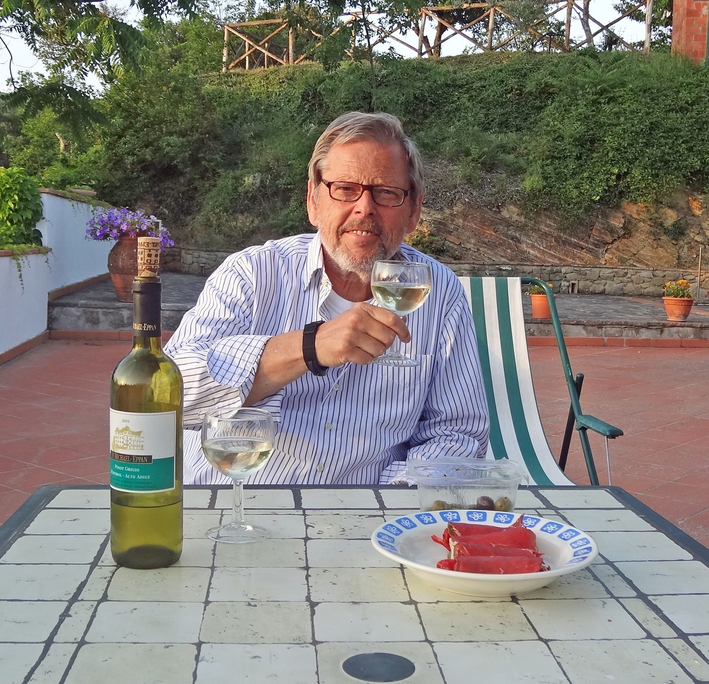

 Italië 2012
Naam: Ton van Beek, geb.datum: 3 juni 1943, geboorteplaats: Breda, gepensioneerd.
Als bedrijfskundige ben ik o.a. 23 jaar werkzaam geweest bij de Sociale Werkvoorziening in Rotterdam.
Daarnaast ben ik vanaf mijn 16e jaar werkzaam geweest in het theater en in verenigingen. In het theater heb ik gespeeld
en geregisseerd.
Ik ben van 1963-1964 20 maanden als dienstplichtige in militaire dienst geweest. Ik behaalde daar de rang van wachtmeester bij de artillerie.
In verenigingen was ik veelal als bestuurslid werkzaam.
In die laatste hoedanigheid ben ik waarschijnlijk bezig aan "mijn laatste kunstje": voorzitter van de voetbalvereniging Baronie in Breda,
een middelgrote club met 1300 leden waarvan het 1e team momenteel speelt in de zondag-hoofdklasse B.
Het is een vrijwilligersfunctie, maar in de praktijk betekent het gewoon een vaste baan waar ik per week ca. 30 uur mee bezig ben.